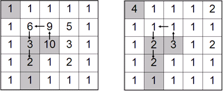

The block world is divided into n rows n columns of blocks. Rows are numbered 1 to n from top to bottom, and columns are numbered 1 to n from left to right. You start from a square, follow a strictly height-decreasing path until no legal moves are possible. During your trip, you can use a jewel magnetizer to get jewels not too far away. To be precise, you can get a jewel in square (r1, c1) if and only if there is a square (r2, c2) on your path such that max{|r1-r2|,|c1-c2|} <= r.
There is one thing you should be aware of: your bag capacity is limited, so you can only get at most m jewels. There is at most one jewel on each block.

The picture above shows an example. The numbers in the left picture describes the heights in each block, where the numbers in the right picture describes the jewel values in each block. An optimal solution for m=5 and r=1 is shown in the figures. The arrows denote the path, gray squares corresponds to jewels you should get. The total value is 4+3+2+2+1=12.
Write a program to get the highest total value of jewels.
5 5 1 3 3 1 1 1 1 1 1 6 9 5 1 1 3 10 3 1 1 2 1 2 1 1 1 1 1 1 4 1 1 1 2 1 1 1 1 1 1 2 3 1 2 1 2 1 1 1 1 1 1 1 1 4 2 1 1 3 4 5 6 9 3 9 9 9 2 1 1 9 9 9 9 9 0 0 0 1 0 0 0 0 0 0 0 0 0 0 1 5 0
Case 1: 12 Case 2: 2